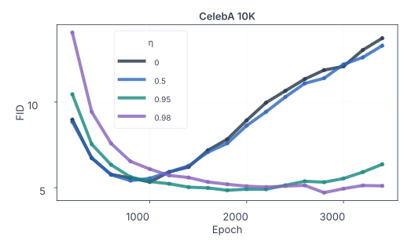
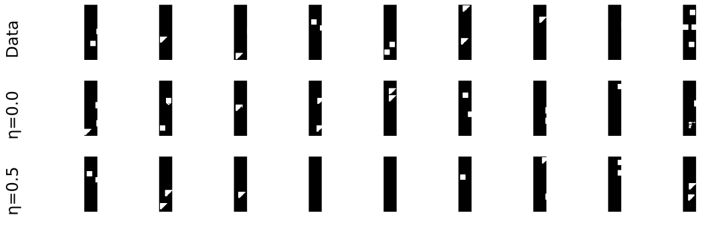

Sparsely Supervised Diffusion
1Aalto University, Finland 2Imperial College London, UK 3KTH Royal Institute of Technology, Sweden
4ELLIS Institute Finland 5University of Oulu, Finland
NeurIPS 2026
Abstract
Diffusion models have shown remarkable success across a wide range of generative tasks. However, they often suffer from spatially inconsistent generation, arguably due to excessive correlations learned by the model. This can produce samples that are locally plausible but globally inconsistent. We propose a principled method to mitigate this issue. Our method, sparsely supervised diffusion (SSD), is a simple yet effective masking framework that can be implemented with only a few lines of code. We analytically show that SSD fundamentally alters diffusion model training by modifying the spectrum of the data covariance and that it suppresses correlations in the data covariance matrix. Experiments show that our method more accurately approximates the underlying population score function, reduces memorization on small datasets, and promotes the use of essential contextual information during generation. Moreover, even when up to 98% of pixels are masked, it achieves competitive FID scores across a range of datasets and avoids the training instability commonly observed on small datasets.
Motivation
TL;DR: Diffusion models often produce spatially inconsistent images. We propose sparsely supervised diffusion, a simple, principled method that reduces excessive correlations from limited data without relying on physics or geometry heuristics. It is effective and requires only a few lines of code.
η = 0SSD
η = 0.2SSD
η = 0.5SSD
η = 0.8
Main theoretical analysis
Masking regularizes correlations
For zero-mean Gaussian data with covariance Σ, consider an analytical masked-data model x̃ = m ⊙ x. Each coordinate is retained independently with probability p = 1 − η, and the mask is independent of the data. Writing D = diag(Σ), the masked covariance is
Σ̃ii = p Σii
Coordinate variances are scaled by the retention probability.
Σ̃ij = p² Σij, i ≠ j
Cross-coordinate covariance is attenuated more strongly.
Masking changes directional variance
Let ui be an eigenvector of the original covariance Σ, with eigenvalue λi. The variance of the masked data along that original direction becomes
Experiments
Generation quality
SSD achieves competitive FID scores on CIFAR-10, CelebA, LSUN Bedroom, and ImageNet.
| Dataset | Baseline | SSD |
|---|---|---|
| CIFAR-10 | 2.28 ± 0.04 | 2.24 ± 0.05 |
| LSUN Bedroom | 1.40 ± 0.04 | 1.39 ± 0.01 |
| CelebA-50K | 2.23 ± 0.23 | 1.85 ± 0.14 |
| CelebA-10K | 13.72 | 5.10 |
| ImageNet (CFG = 1.5) | 4.98 | 4.83 |
Training on limited data
On CelebA-10K, higher masking ratios mitigate the deterioration in FID that occurs with prolonged training. The training curves compare the baseline with several SSD masking ratios.

Spatial consistency
For a controlled dataset of triangles and squares, we count scattered clusters in 5,000 generated images. SSD reduces images containing scattered clusters from 3,899 to 792, and the total number of clusters from 11,208 to 1,014.

Finger-count errors on 11kHands
After 400 training epochs, we generate 1,000 samples per model using the same random seed and count four- and six-finger cases. SSD reduces the total from 35 to 22.
η = 0SSD
η = 0.8
| Error type | Baseline (η = 0) | SSD (η = 0.8) |
|---|---|---|
| Six fingers | 26 | 8 |
| Four fingers | 9 | 14 |
| Total | 35 | 22 |
BibTeX
@inproceedings{zhao2026sparsely,
title = {Sparsely Supervised Diffusion},
author = {Zhao, Wenshuai and Li, Zhiyuan and Zhao, Yi and Vali, Mohammad Hassan and Trapp, Martin and Pajarinen, Joni and Kannala, Juho and Solin, Arno},
booktitle = {Advances in Neural Information Processing Systems},
year = {2026}
}